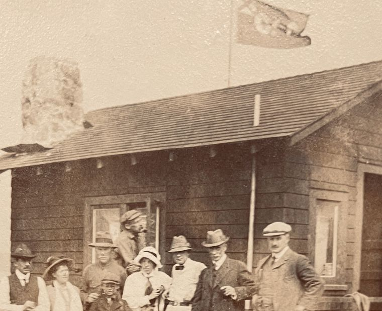
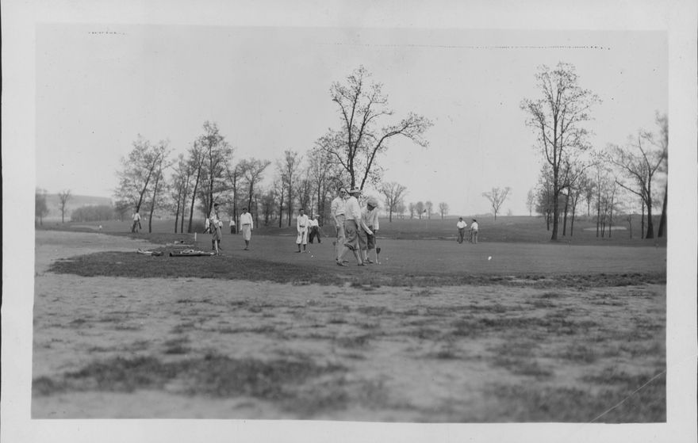
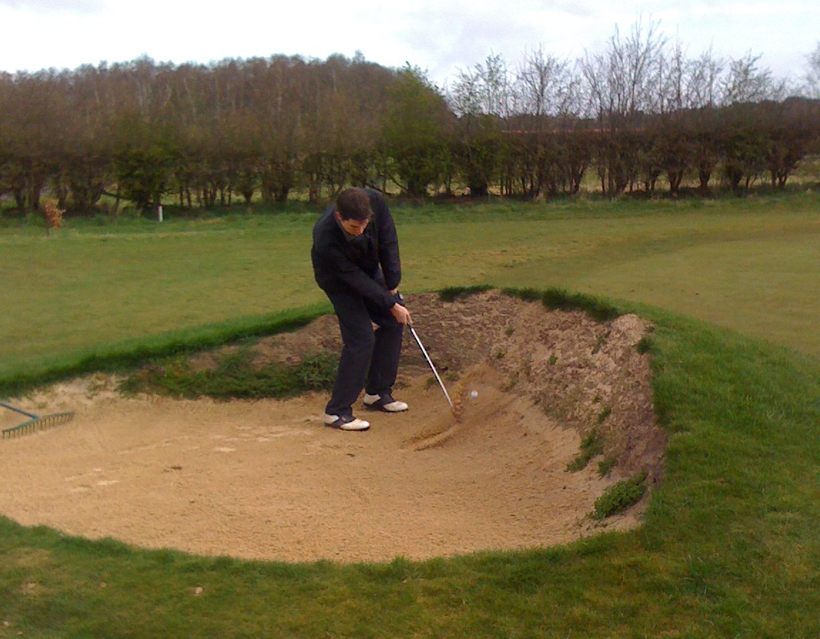
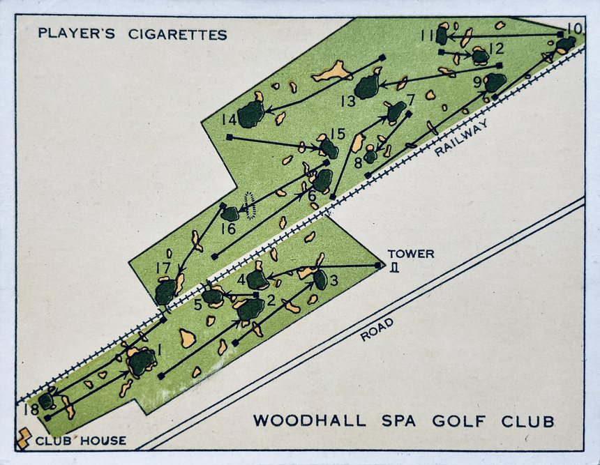

연습장에서 아무리 잘 쳐도, 처음 필드에 나가면 누구나 긴장합니다. 스윙보다 더 신경 쓰이는 게 있죠. 바로 "내가 규칙을 몰라 민폐를 끼치면 어떡하지" 하는 걱정입니다. 그래서 오늘은 초보가 라운딩 전 꼭 알아두면 좋은 기본 규칙과 에티켓을 정리해봅니다.

안전이 최우선입니다 — "포어!"
골프장에서 가장 먼저 배워야 할 단어는 '포어(Fore)!'입니다. 내가 친 공이 다른 사람 쪽으로 날아갈 때 큰 소리로 외쳐 위험을 알리는 경고죠. 자존심 때문에 머뭇거리면 안 됩니다. 다른 사람의 안전이 달린 문제이니까요.
이 소리를 들으면 즉시 머리를 감싸고 몸을 웅크리세요. 공이 어디서 오는지 확인하려 고개를 드는 건 위험합니다.
느린 플레이는 최대의 민폐입니다
골프장에서 가장 큰 결례는 실력이 아니라 '느린 플레이'입니다. 초보라도 내 차례가 오면 미리 준비하고, 공을 찾는 데 너무 오래 걸리면 뒤 팀을 먼저 보내고(이걸 '패스한다'고 합니다), 전체 진행 속도에 맞춰 움직이는 게 중요합니다.
그린에서는 발끝을 조심하세요

그린(홀이 있는 잔디 구역)은 예민한 곳입니다. 몇 가지 매너가 있습니다.
- 퍼팅 라인을 밟지 않기 — 다른 사람의 공과 홀 사이, 즉 공이 굴러갈 길을 밟으면 잔디가 눌려 그 사람의 퍼팅을 방해합니다.
- 볼 마크 사용 — 내 공이 다른 사람의 퍼팅 길을 막으면, 동전이나 마커로 위치를 표시하고 공을 잠시 치울 수 있습니다.
- 피치마크 수리 — 공이 그린에 떨어지며 움푹 팬 자국(피치마크)은 전용 포크로 원래대로 돌려놓는 게 예의입니다.
벙커를 정리하고 떠나세요

벙커(모래 장애물)에 들어갔다면, 샷을 친 뒤 고무래로 부드럽게 정리해 다음 사람이 고르게 다듬어진 모래에서 칠 수 있게 해주는 게 기본입니다. 내가 남긴 발자국을 다음 사람이 밟는 일이 없도록 하는 배려죠.
조용히, 그리고 그림자를 조심히
다른 사람이 샷을 칠 때는 조용히 기다리고, 그 사람의 시야나 퍼팅 라인에 내 그림자가 드리우지 않도록 서는 위치도 신경 씁니다. 작은 배려지만, 이런 것들이 함께 치는 사람들을 편하게 합니다.
아주 간단한 점수 규칙

공식 규칙은 방대하지만, 초보가 알아둘 핵심은 간단합니다. 공을 친 횟수를 그대로 세는 게 스코어입니다. 공을 잃어버리거나(분실) 물에 빠트리면(해저드) 벌타가 추가됩니다. 자세한 규칙은 치다 보면 자연스럽게 익혀지니, 처음부터 다 외우려 할 필요는 없습니다.
마치며
골프는 혼자 잘 친다고 즐거운 운동이 아닙니다. 함께 치는 네 시간을 서로 기분 좋게 만드는 것 — 그게 에티켓이 존재하는 이유입니다. 첫 라운드, 너무 긴장하지 마세요. 배려하는 마음만 있으면 절반은 이미 갖춘 셈이니까요.